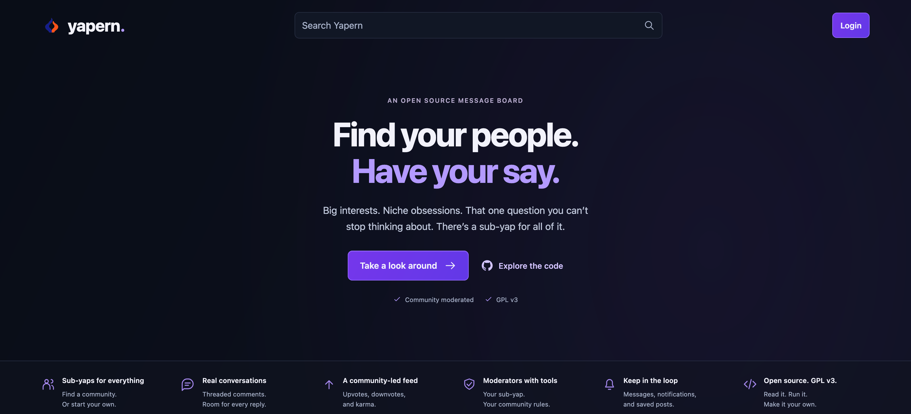
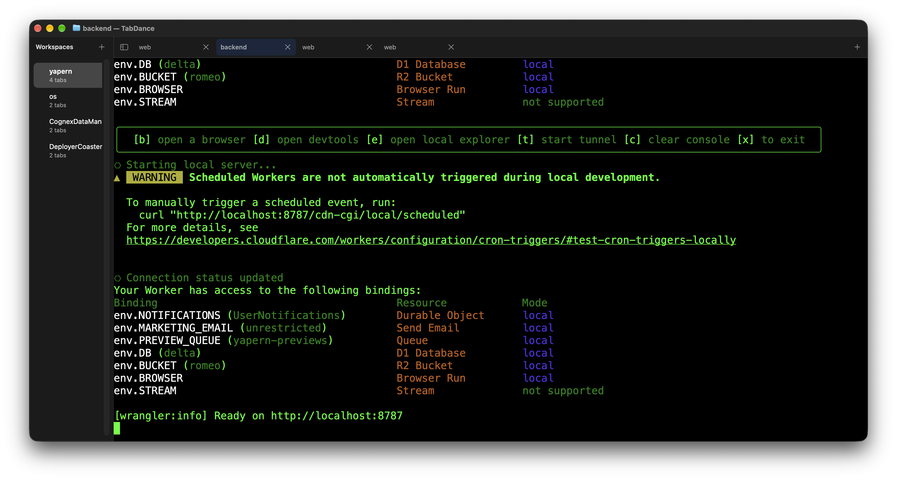
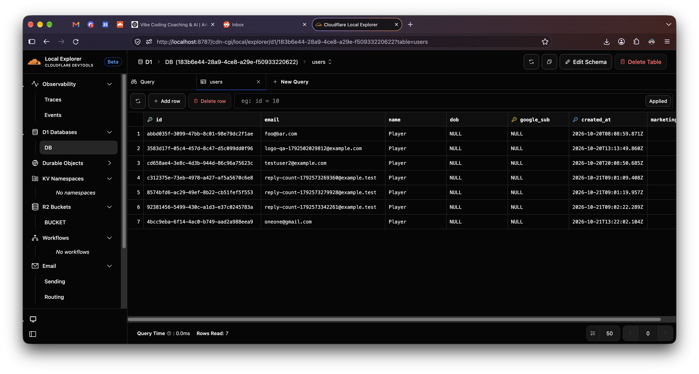

-
Time to make the frontend
The yapern api docs and the openapi.json file are what asking for hono and zod did for our code. It made it so there are very clear docs on how to call our backend api endpoints. These docs can be used by a human to test them and the large json file can be used by codex when it's building the frontend.
Speaking of frontend, let's do that next. "Hi codex, now let's make a cloudflare pages frontend html javascript and css only that speaks to this backend. Make a homepage with a way to sign up as a new user and then logout if the user is logged in. The site is a reddit clone but make it our own version called yapern and it has sub-yaps vs sub-reddits. It's going to be open source GPL v3."

-
Make sure SQLite is working
Trust but verify! After running `npm run dev` you should see this:

And when you press E for open local Explorer you get:

In this example I've already registered a few test users. See if you can signup with your email and get a row to show here. The thing you are verifying is did codex actually wire up the code right so when you register as a new user a row in the sqlite database is actually written. And this is the process. You ask codex to do something. Then as the human developer you spot check things and make sure everything is cool.
If you can't get a row here, don't go on to the next step yet. Keep asking codex why and how to fix.
-
Time to do more than login
Login is great but now let's make this an actual message board where a user can post a message. "Hey codex, make a migration for a new table called messages that have a title, a body and are written by a specific user. Add to the frontend a new create message modal and wire this up."
You can also try this on the live https://yapern.com site.